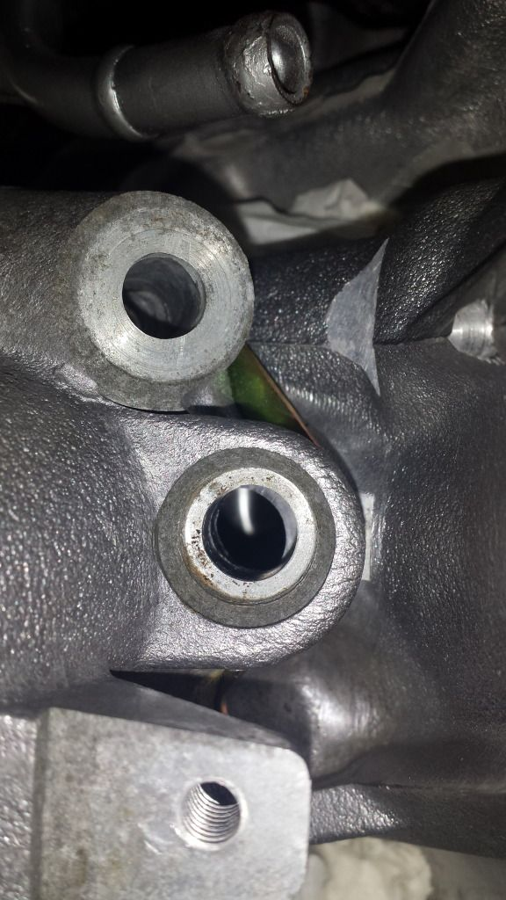

-
I'm using the VG30 LIM with the OWO Heads. The only issue I'm seeing is the drivers side injector port holes don't line up that well with the head ports…I'll have to double check the intake ports as that worries me more.
Has anyone ran a similar set-up and had this issue? The LIM still sits on the gasket perfectly fine and it seems odd the passenger side is almost dead on while the drivers side is slightly off. I'll have to check if it's the same issue on the stock heads.
The manifold bolts right in perfectly though…I just find this peculiar.
Usual Z31 suspect: Garage Queen (aka broken)

-
Did you deck your block and mill your heads? Decking your block will bring the heads in ever so slightly causing this added with milling the head you can bring it in that much easily.88SS - #300 - http://z31performance.com/showthread.php?18360 -
Yes, but I used a MLS gasket .060" thickness to make up for the machine work. I feel like the LIM wouldn't even fit on if that was the case. Either way, does anyone think this will cause any issues? The one pictured above is probably the most obstructed one. I suppose I can always mill down the LIM so it sits flush again.Usual Z31 suspect: Garage Queen (aka broken)
-
Tighten it down and see what it looks like then, in this pic it is not drawn down from the looks of it.Hmmm, Whats next?
Full Size Bronco, smashing shit.
84ZXT -
True story. It will be closer than this, but still far enough off where I will be concerned I'm sure. I did bolt it in afterwords, but didn't torque it down. If I go work on it today I'll take some pics.Usual Z31 suspect: Garage Queen (aka broken)
-
might try the later style flat gasket, should sit lower and be closer. The vg33 style or what ever it is. You could see what it looks like with no gasket for reference. -
Ohhh good idea!Tempestas;348091 wrote: might try the later style flat gasket, should sit lower and be closer. The vg33 style or what ever it is. You could see what it looks like with no gasket for reference.Hmmm, Whats next?
Full Size Bronco, smashing shit.
84ZXT -
Yeah, great idea. I'll seat it on the heads today without a gasket. Just looked up the VG33 gaskets and they are different (thinner, as you said)…so I suppose if it seats properly with the gaskets off I'll try those and return the VG30's.Tempestas;348091 wrote: might try the later style flat gasket, should sit lower and be closer. The vg33 style or what ever it is. You could see what it looks like with no gasket for reference.
Thanks for suggestions guys. Sometimes I overlook even the easiest things I can do to check things out.Usual Z31 suspect: Garage Queen (aka broken)
-
If you're worried about alignment, torque it down and shove a scope down the runners to look for misalignment -
I wish I had that technology. Oil around all the ports without a gasket will be good enough for me. Gasket shouldn't change it too much.Usual Z31 suspect: Garage Queen (aka broken)
-
I definitely need to mill the LIM down a few thousandths or maybe more. The passenger side sits almost perfect with no gasket but the drivers side is off a bit. Any ideas on how to calculate how much I need to mill?Usual Z31 suspect: Garage Queen (aka broken)
-
Measure the horizontal width, as in dead level, compare the edges that are the problem, in this case the injector bosses, check all of them… then measure the exact horizontal width of the lim at the same spot
Then convert that distance difference with complex maths using online calcs at 60 degrees (so really X * 3/2), and mill half that on each side approximately
-
Wouldn't I technically mill less on the passenger side vs. driver side if one is off more than the other?Usual Z31 suspect: Garage Queen (aka broken)
-
I imagine so… but why don't you sit the lim on the heads without a gasket and see where it centers itself first
You can also use the difference between gasket and none in the misalignment to figure out how much thinner the gasket would have to be to be ideal fit, then subtract that from the lim -
I'll give that a shot tomorrow thanks. hopefully one quick run on the mill will get me where i need to be and then it's time to throw the engine in the car!Usual Z31 suspect: Garage Queen (aka broken)

Copyright © 2006–. All rights reserved. Privacy Policy